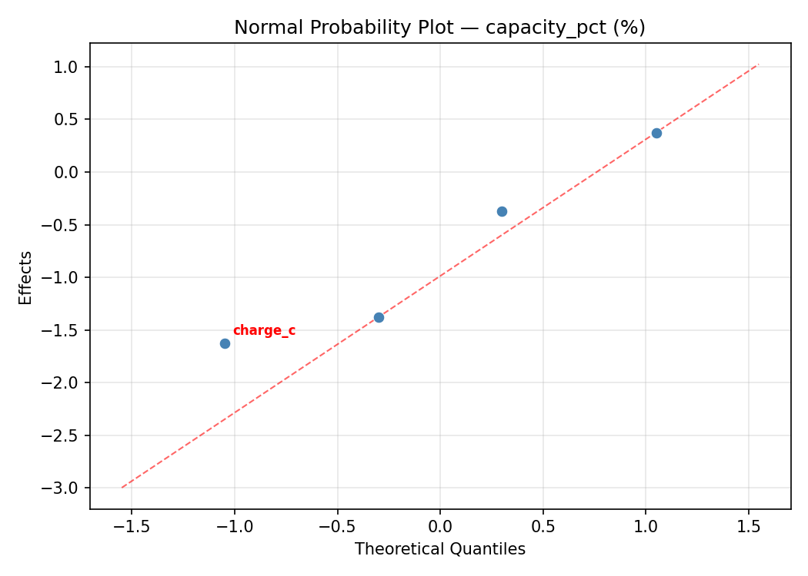
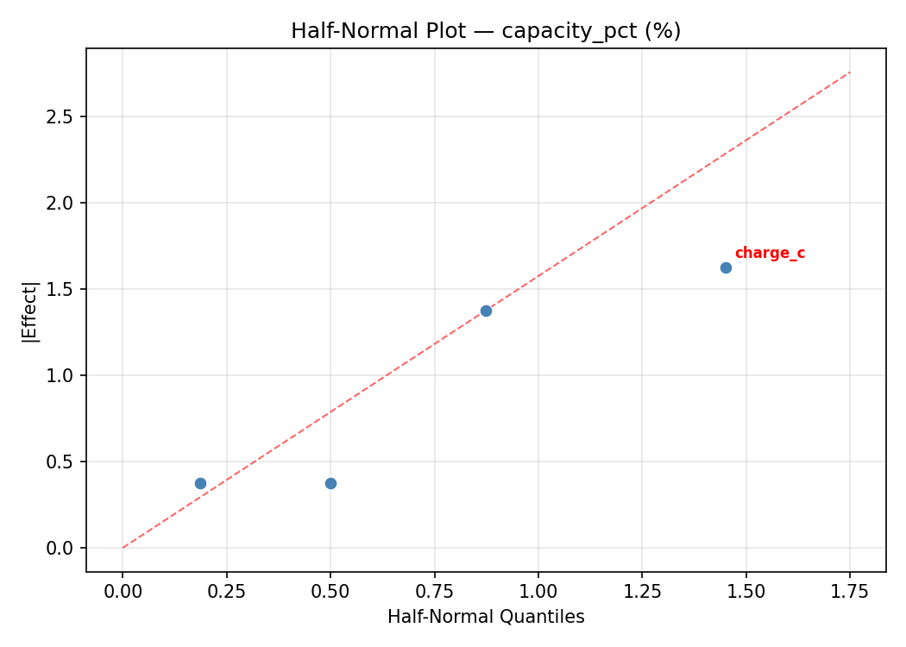
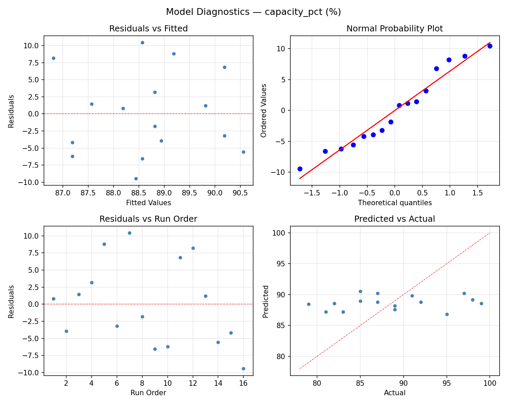
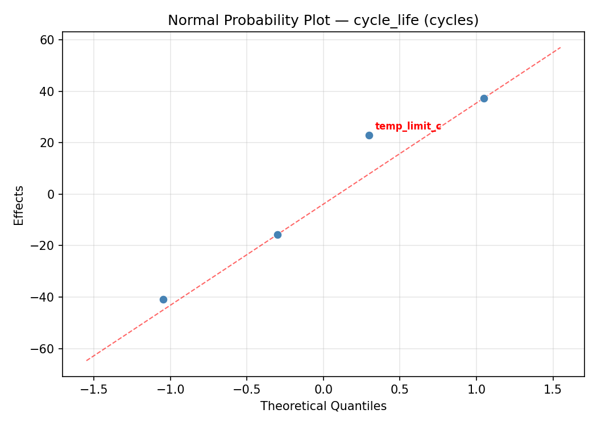
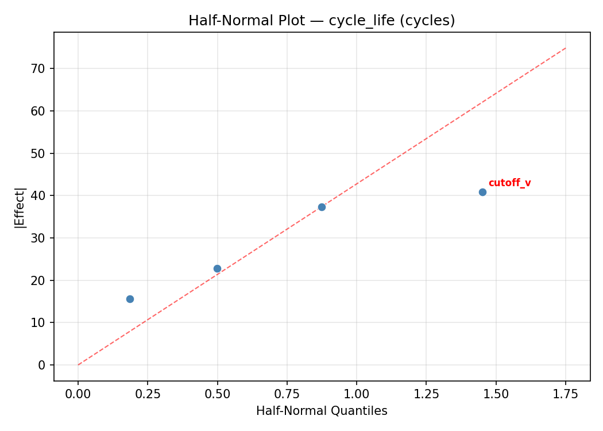
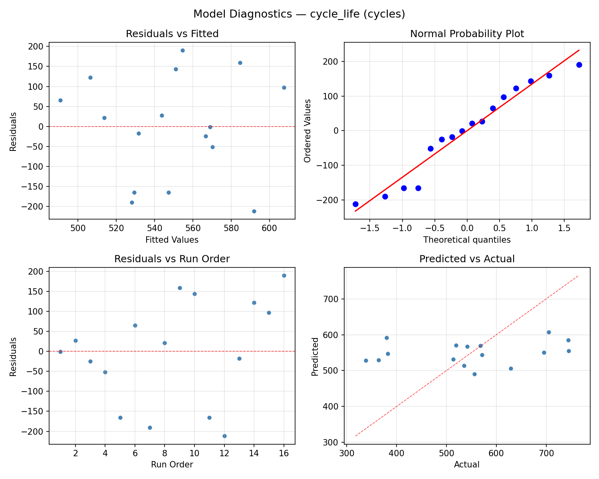

Summary
This experiment investigates battery charger settings. Full factorial of charge current, voltage cutoff, trickle threshold, and temperature limit to maximize capacity and cycle life.
The design varies 4 factors: charge c (C), ranging from 0.5 to 2.0, cutoff v (V), ranging from 4.15 to 4.25, trickle pct (%), ranging from 3 to 10, and temp limit c (C), ranging from 35 to 50. The goal is to optimize 2 responses: capacity pct (%) (maximize) and cycle life (cycles) (maximize). Fixed conditions held constant across all runs include chemistry = LiPo, cells = 3S.
A full factorial design was used to explore all 16 possible combinations of the 4 factors at two levels. This guarantees that every main effect and interaction can be estimated independently, at the cost of a larger experiment (16 runs).
Quadratic response surface models were fitted to capture potential curvature and factor interactions. The RSM contour plots below visualize how pairs of factors jointly affect each response.
Key Findings
For capacity pct, the most influential factors were charge c (51.1%), cutoff v (27.2%), temp limit c (20.7%). The best observed value was 99.0 (at charge c = 2.0, cutoff v = 4.15, trickle pct = 3).
For cycle life, the most influential factors were charge c (47.9%), temp limit c (23.8%), cutoff v (20.7%). The best observed value was 745.0 (at charge c = 0.5, cutoff v = 4.15, trickle pct = 3).
Recommended Next Steps
- Consider whether any fixed factors should be varied in a future study.
Experimental Setup
Factors
| Factor | Low | High | Unit |
|---|
charge_c | 0.5 | 2.0 | C |
cutoff_v | 4.15 | 4.25 | V |
trickle_pct | 3 | 10 | % |
temp_limit_c | 35 | 50 | C |
Fixed: chemistry = LiPo, cells = 3S
Responses
| Response | Direction | Unit |
|---|
capacity_pct | ↑ maximize | % |
cycle_life | ↑ maximize | cycles |
Configuration
{
"metadata": {
"name": "Battery Charger Settings",
"description": "Full factorial of charge current, voltage cutoff, trickle threshold, and temperature limit to maximize capacity and cycle life"
},
"factors": [
{
"name": "charge_c",
"levels": [
"0.5",
"2.0"
],
"type": "continuous",
"unit": "C"
},
{
"name": "cutoff_v",
"levels": [
"4.15",
"4.25"
],
"type": "continuous",
"unit": "V"
},
{
"name": "trickle_pct",
"levels": [
"3",
"10"
],
"type": "continuous",
"unit": "%"
},
{
"name": "temp_limit_c",
"levels": [
"35",
"50"
],
"type": "continuous",
"unit": "C"
}
],
"fixed_factors": {
"chemistry": "LiPo",
"cells": "3S"
},
"responses": [
{
"name": "capacity_pct",
"optimize": "maximize",
"unit": "%"
},
{
"name": "cycle_life",
"optimize": "maximize",
"unit": "cycles"
}
],
"settings": {
"operation": "full_factorial",
"test_script": "use_cases/274_battery_charger/sim.sh"
}
}
Experimental Matrix
The Full Factorial Design produces 16 runs. Each row is one experiment with specific factor settings.
| Run | charge_c | cutoff_v | trickle_pct | temp_limit_c |
|---|
| 1 | 0.5 | 4.25 | 10 | 50 |
| 2 | 2.0 | 4.15 | 3 | 50 |
| 3 | 0.5 | 4.25 | 3 | 50 |
| 4 | 0.5 | 4.25 | 10 | 35 |
| 5 | 2.0 | 4.25 | 10 | 35 |
| 6 | 2.0 | 4.15 | 10 | 35 |
| 7 | 2.0 | 4.25 | 3 | 35 |
| 8 | 2.0 | 4.15 | 3 | 35 |
| 9 | 0.5 | 4.15 | 3 | 50 |
| 10 | 0.5 | 4.15 | 10 | 35 |
| 11 | 2.0 | 4.25 | 3 | 50 |
| 12 | 2.0 | 4.25 | 10 | 50 |
| 13 | 0.5 | 4.25 | 3 | 35 |
| 14 | 2.0 | 4.15 | 10 | 50 |
| 15 | 0.5 | 4.15 | 3 | 35 |
| 16 | 0.5 | 4.15 | 10 | 50 |
Step-by-Step Workflow
1
Preview the design
$ python doe.py info --config use_cases/274_battery_charger/config.json
2
Generate the runner script
$ python doe.py generate --config use_cases/274_battery_charger/config.json \
--output use_cases/274_battery_charger/results/run.sh --seed 42
3
Execute the experiments
$ bash use_cases/274_battery_charger/results/run.sh
4
Analyze results
$ python doe.py analyze --config use_cases/274_battery_charger/config.json
5
Get optimization recommendations
$ python doe.py optimize --config use_cases/274_battery_charger/config.json
6
Multi-objective optimization
With 2 competing responses, use --multi to find the best compromise via Derringer–Suich desirability.
$ python doe.py optimize --config use_cases/274_battery_charger/config.json --multi
7
Generate the HTML report
$ python doe.py report --config use_cases/274_battery_charger/config.json \
--output use_cases/274_battery_charger/results/report.html
Features Exercised
| Feature | Value |
|---|
| Design type | full_factorial |
| Factor types | continuous (all 4) |
| Arg style | double-dash |
| Responses | 2 (capacity_pct ↑, cycle_life ↑) |
| Total runs | 16 |
Analysis Results
Generated from actual experiment runs using the DOE Helper Tool.
Response: capacity_pct
Top factors: charge_c (51.1%), cutoff_v (27.2%), temp_limit_c (20.7%).
ANOVA
| Source | DF | SS | MS | F | p-value |
|---|
| Source | DF | SS | MS | F | p-value |
| charge_c | 1 | 138.0625 | 138.0625 | 4.065 | 0.0999 |
| cutoff_v | 1 | 39.0625 | 39.0625 | 1.150 | 0.3325 |
| trickle_pct | 1 | 0.0625 | 0.0625 | 0.002 | 0.9674 |
| temp_limit_c | 1 | 22.5625 | 22.5625 | 0.664 | 0.4521 |
| charge_c*cutoff_v | 1 | 0.5625 | 0.5625 | 0.017 | 0.9026 |
| charge_c*trickle_pct | 1 | 27.5625 | 27.5625 | 0.812 | 0.4090 |
| charge_c*temp_limit_c | 1 | 138.0625 | 138.0625 | 4.065 | 0.0999 |
| cutoff_v*trickle_pct | 1 | 33.0625 | 33.0625 | 0.974 | 0.3691 |
| cutoff_v*temp_limit_c | 1 | 5.0625 | 5.0625 | 0.149 | 0.7153 |
| trickle_pct*temp_limit_c | 1 | 7.5625 | 7.5625 | 0.223 | 0.6569 |
| Error | 5 | 169.8125 | 33.9625 | | |
| Total | 15 | 581.4375 | 38.7625 | | |
Pareto Chart

Main Effects Plot

Normal Probability Plot of Effects

Half-Normal Plot of Effects

Model Diagnostics

Response: cycle_life
Top factors: charge_c (47.9%), temp_limit_c (23.8%), cutoff_v (20.7%).
ANOVA
| Source | DF | SS | MS | F | p-value |
|---|
| Source | DF | SS | MS | F | p-value |
| charge_c | 1 | 54405.5625 | 54405.5625 | 3.080 | 0.1396 |
| cutoff_v | 1 | 10150.5625 | 10150.5625 | 0.575 | 0.4826 |
| trickle_pct | 1 | 1387.5625 | 1387.5625 | 0.079 | 0.7905 |
| temp_limit_c | 1 | 13398.0625 | 13398.0625 | 0.758 | 0.4237 |
| charge_c*cutoff_v | 1 | 52.5625 | 52.5625 | 0.003 | 0.9586 |
| charge_c*trickle_pct | 1 | 11395.5625 | 11395.5625 | 0.645 | 0.4584 |
| charge_c*temp_limit_c | 1 | 52326.5625 | 52326.5625 | 2.962 | 0.1459 |
| cutoff_v*trickle_pct | 1 | 13053.0625 | 13053.0625 | 0.739 | 0.4293 |
| cutoff_v*temp_limit_c | 1 | 13282.5625 | 13282.5625 | 0.752 | 0.4255 |
| trickle_pct*temp_limit_c | 1 | 9168.0625 | 9168.0625 | 0.519 | 0.5035 |
| Error | 5 | 88332.3125 | 17666.4625 | | |
| Total | 15 | 266952.4375 | 17796.8292 | | |
Pareto Chart

Main Effects Plot

Normal Probability Plot of Effects

Half-Normal Plot of Effects

Model Diagnostics

Response Surface Plots
3D surfaces fitted with quadratic RSM. Red dots are observed data points.
capacity pct charge c vs cutoff v

capacity pct charge c vs temp limit c

capacity pct charge c vs trickle pct

capacity pct cutoff v vs temp limit c

capacity pct cutoff v vs trickle pct

capacity pct trickle pct vs temp limit c

cycle life charge c vs cutoff v

cycle life charge c vs temp limit c

cycle life charge c vs trickle pct

cycle life cutoff v vs temp limit c

cycle life cutoff v vs trickle pct

cycle life trickle pct vs temp limit c

Multi-Objective Optimization
When responses compete, Derringer–Suich desirability finds the best compromise.
Each response is scaled to a 0–1 desirability, then combined via a weighted geometric mean.
Overall Desirability
D = 0.5350
Per-Response Desirability
| Response | Weight | Desirability | Predicted | Dir |
|---|
capacity_pct |
1.5 |
|
92.00 0.6364 92.00 % |
↑ |
cycle_life |
1.5 |
|
519.00 0.4497 519.00 cycles |
↑ |
Recommended Settings
| Factor | Value |
|---|
charge_c | 2.0 C |
cutoff_v | 4.15 V |
trickle_pct | 3 % |
temp_limit_c | 35 C |
Source: from observed run #4
Trade-off Summary
Sacrifice = how much worse than single-objective best.
| Response | Predicted | Best Observed | Sacrifice |
|---|
cycle_life | 519.00 | 745.00 | +226.00 |
Top 3 Runs by Desirability
| Run | D | Factor Settings |
|---|
| #1 | 0.5288 | charge_c=2.0, cutoff_v=4.25, trickle_pct=3, temp_limit_c=50 |
| #13 | 0.5091 | charge_c=0.5, cutoff_v=4.25, trickle_pct=3, temp_limit_c=50 |
Model Quality
| Response | R² | Type |
|---|
cycle_life | 0.5582 | linear |
Full Multi-Objective Output
============================================================
MULTI-OBJECTIVE OPTIMIZATION
Method: Derringer-Suich Desirability Function
============================================================
Overall desirability: D = 0.5350
Response Weight Desirability Predicted Direction
---------------------------------------------------------------------
capacity_pct 1.5 0.6364 92.00 % ↑
cycle_life 1.5 0.4497 519.00 cycles ↑
Recommended settings:
charge_c = 2.0 C
cutoff_v = 4.15 V
trickle_pct = 3 %
temp_limit_c = 35 C
(from observed run #4)
Trade-off summary:
capacity_pct: 92.00 (best observed: 99.00, sacrifice: +7.00)
cycle_life: 519.00 (best observed: 745.00, sacrifice: +226.00)
Model quality:
capacity_pct: R² = 0.4244 (linear)
cycle_life: R² = 0.5582 (linear)
Top 3 observed runs by overall desirability:
1. Run #4 (D=0.5350): charge_c=2.0, cutoff_v=4.15, trickle_pct=3, temp_limit_c=35
2. Run #1 (D=0.5288): charge_c=2.0, cutoff_v=4.25, trickle_pct=3, temp_limit_c=50
3. Run #13 (D=0.5091): charge_c=0.5, cutoff_v=4.25, trickle_pct=3, temp_limit_c=50
Full Analysis Output
=== Main Effects: capacity_pct ===
Factor Effect Std Error % Contribution
--------------------------------------------------------------
charge_c 5.8750 1.5565 51.1%
cutoff_v 3.1250 1.5565 27.2%
temp_limit_c -2.3750 1.5565 20.7%
trickle_pct 0.1250 1.5565 1.1%
=== ANOVA Table: capacity_pct ===
Source DF SS MS F p-value
-----------------------------------------------------------------------------
charge_c 1 138.0625 138.0625 4.065 0.0999
cutoff_v 1 39.0625 39.0625 1.150 0.3325
trickle_pct 1 0.0625 0.0625 0.002 0.9674
temp_limit_c 1 22.5625 22.5625 0.664 0.4521
charge_c*cutoff_v 1 0.5625 0.5625 0.017 0.9026
charge_c*trickle_pct 1 27.5625 27.5625 0.812 0.4090
charge_c*temp_limit_c 1 138.0625 138.0625 4.065 0.0999
cutoff_v*trickle_pct 1 33.0625 33.0625 0.974 0.3691
cutoff_v*temp_limit_c 1 5.0625 5.0625 0.149 0.7153
trickle_pct*temp_limit_c 1 7.5625 7.5625 0.223 0.6569
Error 5 169.8125 33.9625
Total 15 581.4375 38.7625
=== Interaction Effects: capacity_pct ===
Factor A Factor B Interaction % Contribution
------------------------------------------------------------------------
charge_c temp_limit_c -5.8750 41.2%
cutoff_v trickle_pct 2.8750 20.2%
charge_c trickle_pct 2.6250 18.4%
trickle_pct temp_limit_c 1.3750 9.6%
cutoff_v temp_limit_c -1.1250 7.9%
charge_c cutoff_v -0.3750 2.6%
=== Summary Statistics: capacity_pct ===
charge_c:
Level N Mean Std Min Max
------------------------------------------------------------
0.5 8 85.7500 4.2678 79.0000 91.0000
2.0 8 91.6250 6.7175 82.0000 99.0000
cutoff_v:
Level N Mean Std Min Max
------------------------------------------------------------
4.15 8 87.1250 6.3344 79.0000 99.0000
4.25 8 90.2500 6.1120 82.0000 98.0000
trickle_pct:
Level N Mean Std Min Max
------------------------------------------------------------
10 8 88.6250 6.2321 81.0000 99.0000
3 8 88.7500 6.6494 79.0000 98.0000
temp_limit_c:
Level N Mean Std Min Max
------------------------------------------------------------
35 8 89.8750 7.2789 79.0000 99.0000
50 8 87.5000 5.1824 82.0000 98.0000
=== Main Effects: cycle_life ===
Factor Effect Std Error % Contribution
--------------------------------------------------------------
charge_c -116.6250 33.3512 47.9%
temp_limit_c 57.8750 33.3512 23.8%
cutoff_v -50.3750 33.3512 20.7%
trickle_pct 18.6250 33.3512 7.6%
=== ANOVA Table: cycle_life ===
Source DF SS MS F p-value
-----------------------------------------------------------------------------
charge_c 1 54405.5625 54405.5625 3.080 0.1396
cutoff_v 1 10150.5625 10150.5625 0.575 0.4826
trickle_pct 1 1387.5625 1387.5625 0.079 0.7905
temp_limit_c 1 13398.0625 13398.0625 0.758 0.4237
charge_c*cutoff_v 1 52.5625 52.5625 0.003 0.9586
charge_c*trickle_pct 1 11395.5625 11395.5625 0.645 0.4584
charge_c*temp_limit_c 1 52326.5625 52326.5625 2.962 0.1459
cutoff_v*trickle_pct 1 13053.0625 13053.0625 0.739 0.4293
cutoff_v*temp_limit_c 1 13282.5625 13282.5625 0.752 0.4255
trickle_pct*temp_limit_c 1 9168.0625 9168.0625 0.519 0.5035
Error 5 88332.3125 17666.4625
Total 15 266952.4375 17796.8292
=== Interaction Effects: cycle_life ===
Factor A Factor B Interaction % Contribution
------------------------------------------------------------------------
charge_c temp_limit_c 114.3750 34.2%
cutoff_v temp_limit_c 57.6250 17.3%
cutoff_v trickle_pct -57.1250 17.1%
charge_c trickle_pct -53.3750 16.0%
trickle_pct temp_limit_c -47.8750 14.3%
charge_c cutoff_v 3.6250 1.1%
=== Summary Statistics: cycle_life ===
charge_c:
Level N Mean Std Min Max
------------------------------------------------------------
0.5 8 607.5000 91.4721 514.0000 745.0000
2.0 8 490.8750 148.3128 338.0000 744.0000
cutoff_v:
Level N Mean Std Min Max
------------------------------------------------------------
4.15 8 574.3750 123.6261 338.0000 745.0000
4.25 8 524.0000 146.2962 364.0000 744.0000
trickle_pct:
Level N Mean Std Min Max
------------------------------------------------------------
10 8 539.8750 138.2084 338.0000 744.0000
3 8 558.5000 137.2453 364.0000 745.0000
temp_limit_c:
Level N Mean Std Min Max
------------------------------------------------------------
35 8 520.2500 149.0673 338.0000 745.0000
50 8 578.1250 118.3257 364.0000 744.0000
Optimization Recommendations
=== Optimization: capacity_pct ===
Direction: maximize
Best observed run: #7
charge_c = 2.0
cutoff_v = 4.15
trickle_pct = 3
temp_limit_c = 35
Value: 99.0
RSM Model (linear, R² = 0.0950, Adj R² = -0.2341):
Coefficients:
intercept +88.6875
charge_c +0.9375
cutoff_v +0.5625
trickle_pct -1.0625
temp_limit_c -1.0625
RSM Model (quadratic, R² = 0.8223, Adj R² = -1.6653):
Coefficients:
intercept +17.7375
charge_c +0.9375
cutoff_v +0.5625
trickle_pct -1.0625
temp_limit_c -1.0625
charge_c*cutoff_v -0.9375
charge_c*trickle_pct -1.3125
charge_c*temp_limit_c +2.1875
cutoff_v*trickle_pct +3.3125
cutoff_v*temp_limit_c +1.8125
trickle_pct*temp_limit_c +2.1875
charge_c^2 +17.7375
cutoff_v^2 +17.7375
trickle_pct^2 +17.7375
temp_limit_c^2 +17.7375
Curvature analysis:
cutoff_v coef=+17.7375 convex (has a minimum)
temp_limit_c coef=+17.7375 convex (has a minimum)
charge_c coef=+17.7375 convex (has a minimum)
trickle_pct coef=+17.7375 convex (has a minimum)
Notable interactions:
cutoff_v*trickle_pct coef=+3.3125 (synergistic)
trickle_pct*temp_limit_c coef=+2.1875 (synergistic)
charge_c*temp_limit_c coef=+2.1875 (synergistic)
cutoff_v*temp_limit_c coef=+1.8125 (synergistic)
charge_c*trickle_pct coef=-1.3125 (antagonistic)
charge_c*cutoff_v coef=-0.9375 (antagonistic)
Predicted optimum (from linear model, at observed points):
charge_c = 2.0
cutoff_v = 4.25
trickle_pct = 3
temp_limit_c = 35
Predicted value: 92.3125
Surface optimum (via L-BFGS-B, linear model):
charge_c = 2
cutoff_v = 4.25
trickle_pct = 3
temp_limit_c = 35
Predicted value: 92.3125
Model quality: Weak fit — consider adding center points or using a different design.
Factor importance:
1. trickle_pct (effect: 2.1, contribution: 29.3%)
2. temp_limit_c (effect: -2.1, contribution: 29.3%)
3. charge_c (effect: 1.9, contribution: 25.9%)
4. cutoff_v (effect: 1.1, contribution: 15.5%)
=== Optimization: cycle_life ===
Direction: maximize
Best observed run: #16
charge_c = 0.5
cutoff_v = 4.15
trickle_pct = 3
temp_limit_c = 50
Value: 745.0
RSM Model (linear, R² = 0.2211, Adj R² = -0.0622):
Coefficients:
intercept +549.1875
charge_c -30.9375
cutoff_v -20.4375
trickle_pct +34.8125
temp_limit_c +33.1875
RSM Model (quadratic, R² = 0.8763, Adj R² = -0.8553):
Coefficients:
intercept +109.8375
charge_c -30.9375
cutoff_v -20.4375
trickle_pct +34.8125
temp_limit_c +33.1875
charge_c*cutoff_v +8.6875
charge_c*trickle_pct +21.6875
charge_c*temp_limit_c -45.9375
cutoff_v*trickle_pct -73.5625
cutoff_v*temp_limit_c -41.1875
trickle_pct*temp_limit_c -34.1875
charge_c^2 +109.8375
cutoff_v^2 +109.8375
trickle_pct^2 +109.8375
temp_limit_c^2 +109.8375
Curvature analysis:
charge_c coef=+109.8375 convex (has a minimum)
trickle_pct coef=+109.8375 convex (has a minimum)
temp_limit_c coef=+109.8375 convex (has a minimum)
cutoff_v coef=+109.8375 convex (has a minimum)
Notable interactions:
cutoff_v*trickle_pct coef=-73.5625 (antagonistic)
charge_c*temp_limit_c coef=-45.9375 (antagonistic)
cutoff_v*temp_limit_c coef=-41.1875 (antagonistic)
trickle_pct*temp_limit_c coef=-34.1875 (antagonistic)
charge_c*trickle_pct coef=+21.6875 (synergistic)
charge_c*cutoff_v coef=+8.6875 (synergistic)
Predicted optimum (from linear model, at observed points):
charge_c = 0.5
cutoff_v = 4.15
trickle_pct = 10
temp_limit_c = 50
Predicted value: 668.5625
Surface optimum (via L-BFGS-B, linear model):
charge_c = 0.5
cutoff_v = 4.15
trickle_pct = 10
temp_limit_c = 50
Predicted value: 668.5625
Model quality: Weak fit — consider adding center points or using a different design.
Factor importance:
1. trickle_pct (effect: -69.6, contribution: 29.2%)
2. temp_limit_c (effect: 66.4, contribution: 27.8%)
3. charge_c (effect: -61.9, contribution: 25.9%)
4. cutoff_v (effect: -40.9, contribution: 17.1%)